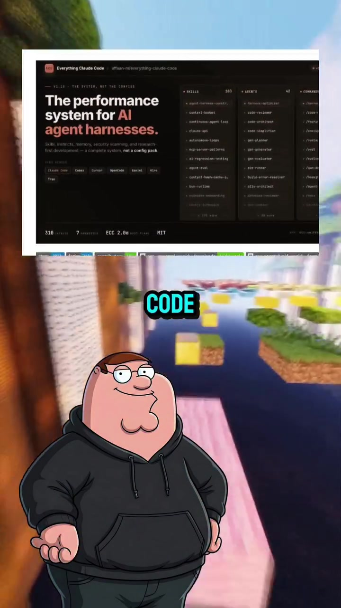
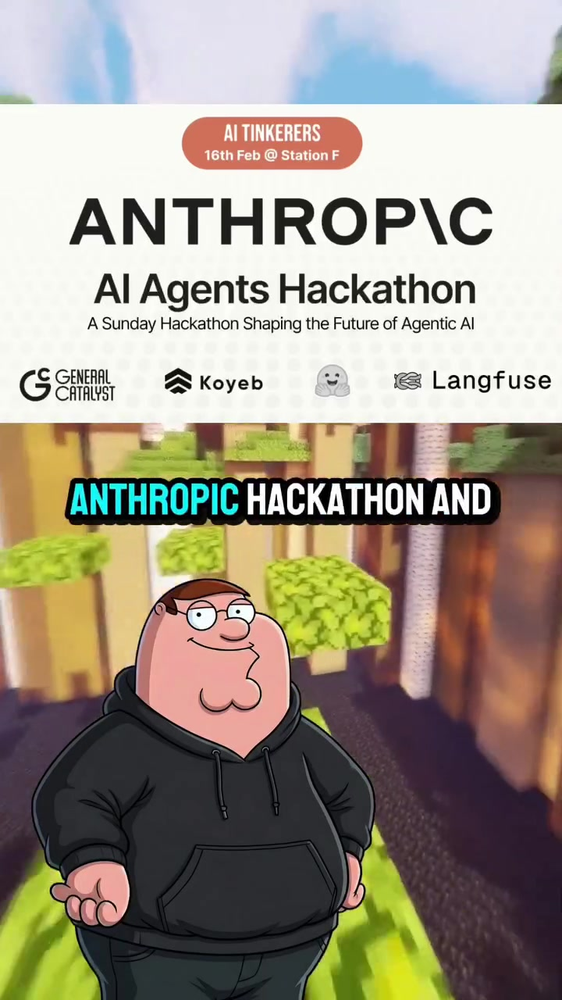
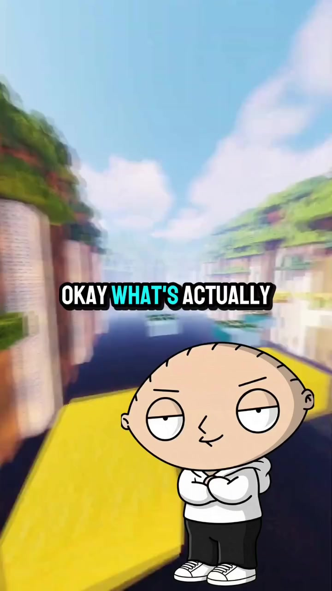

AI · Claude-Skills
Zenith.Chat: Anthropic Hackathon Winner's 181-Skill Claude Code & AgentShield Architecture
During the official Anthropic Hackathon, Affaan Mustafa built and launched Zenith.chat in 8 hours (winning $50,000 in API credits) by utilizing a modular Claude Code system configuration. Now open-sourced, this repository packs 181+ specialized agent skills, 47+ autonomous subagents, and 79+ ready-made slash commands that transform single-threaded LLM chats into a coordinated software engineering organization.
Visual Reference Stills



Core Architectural Pillars
Rather than relying on one generalist model to plan, code, style, and debug, Zenith uses strict separation of concerns:
- Architecture Subagents: Schema design, boundary contracts, and dependency graph validation.
- Implementation Subagents: Atomic file writing and strict TypeScript interface typing.
- Verification Subagents: End-to-end headless browser testing, lint resolution, and performance profiling.
A built-in automated security auditing agent that scans AI coding session changes before git commits:
- Detects hardcoded API keys, JWT secrets, and AWS credential leaks.
- Flags unsanitized user inputs prone to prompt injection or SQL injection.
- Ensures open source dependencies comply with commercial licensing terms.
The configuration rules and markdown skill schemas are designed with open protocols, operating identically across Claude Code CLI, Cursor IDE, Google Antigravity, and Codex environments.